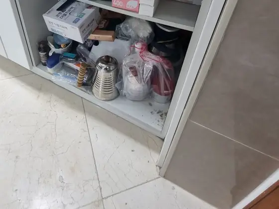
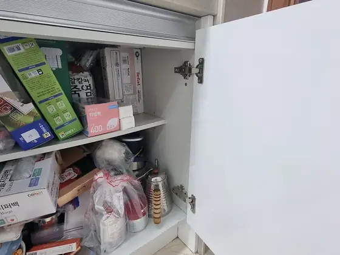

BEFOREAFTER서울 노원 싱크대 문짝 경첩 교체
- 작업 전
- 현장을 확인해 보니 하부장 문짝이 떨어져 있었고 경첩이 고정되어 있던 내부 판재에는 여러 개의 파손 흔적이 남아 있었습니다. 나사가 빠지면서 주변 판재까지 함께 뜯겨 구멍이 커진 상태였습니다.
- 작업 내용
- 경첩 파손 상태 확인 → 기존 문짝과 경첩 분리 → 파손된 나사 구멍 복원 → 경첩 위치 확인 및 재고정
- 작업 완료
- 작업 전에는 경첩 고정 부위가 파손되어 문짝이 완전히 떨어져 있었습니다. 이번에는 하부장이나 문짝을 새로 교체하지 않고 파손된 경첩 구멍을 복원한 뒤 기존 문짝을 다시 설치했습니다.
- 마무리
- 싱크대 문이 떨어졌더라도 문짝 자체에 문제가 없다면 파손된 고정 부위를 보수하여 기존 문을 다시 사용할 수 있는 경우가 있습니다.